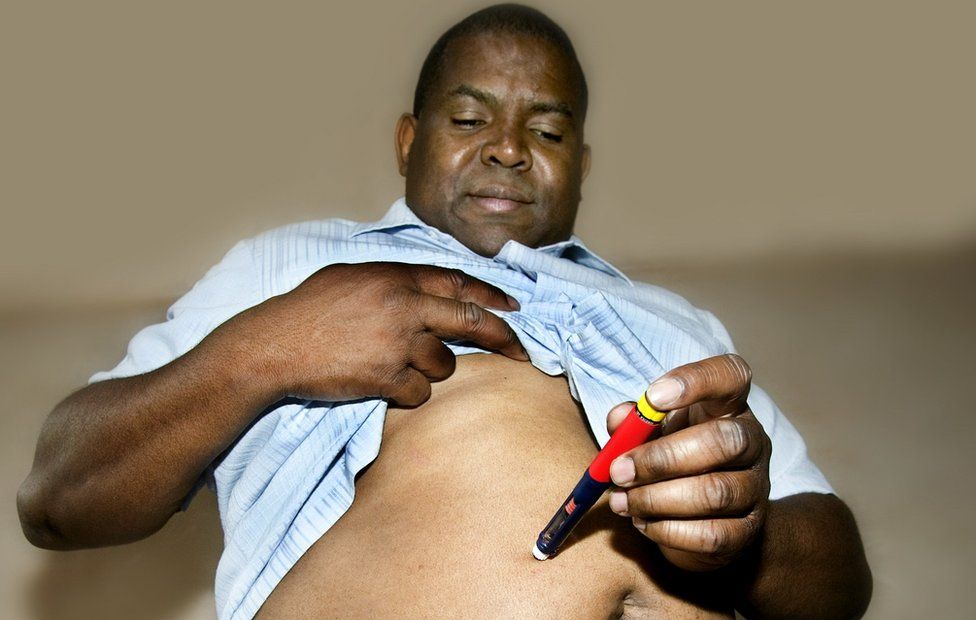

Diabetes
List of Medications for Type 1 Diabetes
Diabetes mellitus refers to a group of diseases that affect how your body uses blood sugar. Diabetes is classified into type 1 diabetes and type 2 diabetes and each type require different medications for treatment.
Insulin
Short acting Insulins
Regular Insulin is a short acting insulin, sold under the brand names Humulin and Novolin. It is administered as a bolus to correct for elevated hyperglycemia after a meal.
Rapid acting Insulins
Rapid acting insulin is taken 15 minutes before eating and is used to account for the increased glucose after eating and quickly lowers glucose levels after consumption. Administration is done subcutaneously.
Long acting Insulins
Long acting insulin is taken once or twice a day to account for the body’s metabolic needs for glucose. It is used in conjunction with short and rapid acting insulin.
Combination Insulins
Another type of diabetes drug is combination therapy where a mix of rapid acting and intermediate acting is administered to account for various diets and metabolisms of individuals.